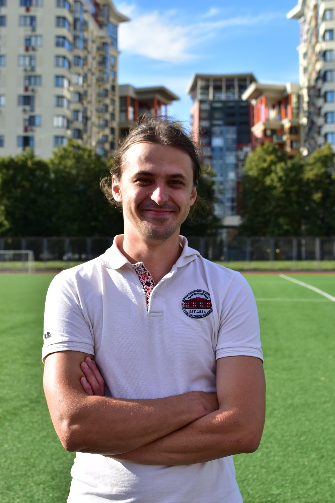

Taras Tsymbal’s personal website
Taras Tsymbal is a sociologist working at the Faculty of Sociology, Taras Shevchenko National University of Kyiv. He holds a PhD in sociology obtained in 2009 at the same university. His research interests include sociology of globalization, social history, historical sociology, and world-systems analysis.

Geographical distribution of students in mid-March 2022